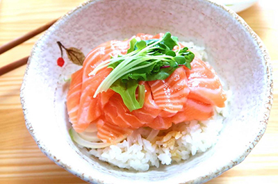

My Favorite Food
Salmon Sashimi (Donburi-style)
My favorite food consists of different types of raw seafood, like sushi. It is the reason why one of my nicknames is "Sushi", and what I imagine to be my perfect meal after a long day. It leaves me full and comforted with a belly full of warm rice. There are many ways to eat salmon sashimi, or raw pieces of fish served with soy sauce and wasabi. In this case, it will be served with rice, my favorite way to eat it, so technically is called salmon donburi, meaning rice bowl. I will describe how I like to enjoy salmon sashimi down in the recipe below. ☺

Ingredients
- Salmon fillet, as many as you like. Sushi grade recommended.
- Cooked bowl of white rice. My favorite is Jasmine.
- 1 tbsp Shoyu (soy sauce)
- 1 tbsp white vinegar
- Few slices of lemon
- 1 tspn wasabi paste, or Japanese horseradish
- Some leaves of crispy lettuce
- Few sheets of nori, or dry seaweed
- 1 cup of shredded white daikon radish
- Some sides of Japanese shibazuke pickles. The purple ones are my favorite!
Directions:
- Carefully cut salmon fillet into 3 in slices, and neatly place ontop a fresh, hot bowl of rice of your choice.
- Arrange your sides accordingly, or garnish your prepared bowl with your favorite veggies.
- Eat and enjoy! Dip the salmon sashimi with rice into the shoyu and vinegar mixture for that tangy and savory taste. For some spice, go for the wasabi paste. A little goes a long way! Squeeze fresh lemon slices over the sashimi for a citrus punch. Refresh your pallete with shredded daikon radish, even ginger if you have any on hand. Make a handroll with the leaves of lettuce or nori sheets using all the ingredients. There are many ways to eat salmon sashimi, which I love so much! It's fresh, filling, and simply healthy besides the amount of rice you can eat!
For more information, you can read this alternative recipe from Future Dish that is close to this one. There is never enough ways to eat salmon sashimi! ♥